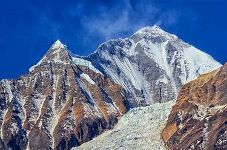
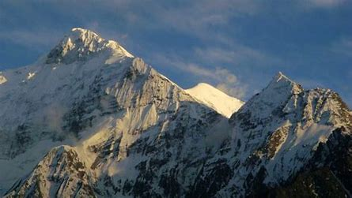

The high steppes of the Nilgiri Hills have been inhabited since prehistoric times, demonstrated by a large number of artifacts unearthed by excavators. A particularly important collection from the region can be seen in the British Museum, including those assembled by colonial officers James Wilkinson Breeks, Major M. J. Walhouse and Sir Walter Elliot. The first recorded use of the word Nila applied to this region can be traced back to 1117 CE. In the report of a general of Vishnuvardhana, King of Hoysalas, who in reference to his enemies, claimed to have "frightened the Todas, driven the Kongas underground, slaughtered the Poluvas, put to death the Maleyalas, terrified Chieftain Kala Nirpala and then proceeded to offer the peak of Nila Mountain to Lakshmi, Goddess of Wealth. A hero stone with a Kannada inscription at Vazhaithottam in the Nilgiri District, dated to 10th century CE, has been discovered. A Kannada inscription of Hoysala king Ballala III (or his subordinate Madhava Dannayaka's son) from the 14th century CE has been discovered at the Siva temple at Nilagiri Sadarana Kote , near the junction of Moyar and Bhavani rivers, but the temple has since been submerged by the Bhavani Sagar dam.
Nilgiri Mountains

| Nilgiri Mountains | |
|---|---|
|  | |
| Highest Peak | |
| Elevation | 2,637 m (8,652 ft) |
| Length | 20 mi (32 km) N-W |
| Coordinates | 11.375°N 76.75833°E |
| Geography | |
| Location | Tamil Nadu, India |
| Borders on | Tamil Nadu, Kerala, Karnataka |